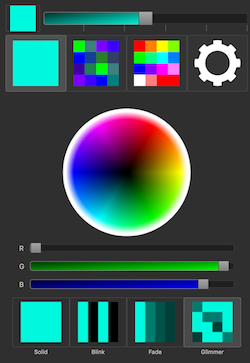
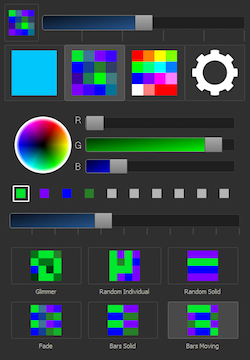
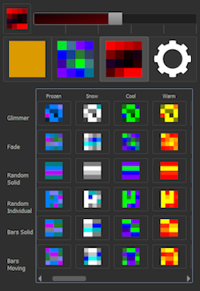
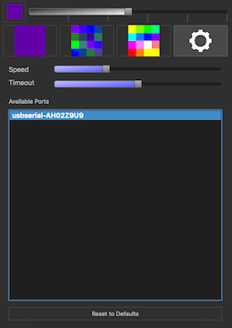

|
LightingGUI
v0.8.0
|
|
LightingGUI
v0.8.0
|
An overview of the frontend classes of the Lighting GUI.
The MainWindow class is the only window in this application. It contains a QStackedWidget which shows 4 pages: SingleColorPage, CustomColorsPage, PresetColorsPage, and the SettingsPage.
On the top of the MainWindow, there is an on/off button in the far left. This button will reflect the current mode when on, and will be black when off. There is also a slider to control the overall brightness of the LEDs.
Single Color PageThe SingleColorPage provides a way to change the main color of the LED system and to set it in single-color modes.
The page contains a ColorPicker widget used to choose the color and a series of buttons that change the mode. The single color modes current supported are solid, blink, fade, and glimmer. |

|
Custom Colors PageThe CustomColorsPage provides a way to use the Custom Color Array from the arduino's RoutinesRGB library to do Multi Color Routines.
The page contains an interface to change the individual array colors and a series of buttons that change the mode. The top interface is split into three parts: a ColorPicker, a color array preview, and a LightsSlider. The ColorPicker chooses the color that is currently selected from the color array preview. The LightsSlider below the preview is used to choose how many colors are active while using an array mode. |

|
Preset Colors PageThe PresetColorsPage provides a way to use the Color Presets from the arduino's RoutineRGB library to do Multi Color Routines.
It contains a grid of buttons that map color presets to lighting modes. The list expands horizontally into a QScrollArea. |

|
Settings PageThe SettingsPage provides a way to configure the application settings.
It currently provides the ability to change the speed the LEDs update and the amount of minutes it takes for the LEDs to timeout. It also shows a list of the available serial connections and clicking on a serial connection will attempt to connect to it. In future updates, this list will be expanding to allow connections to HTTP, UDP, and BLE. |

|
The LightsButton class provides all of the buttons used within the application. All buttons have an icon, while some have labels or extra logic attached.
There are currently three different ways you can set up a button. A standard button emits a EColorGroup and a ELightingRoutine and doesn't have a label. A labeled button emits a EColorGroup and a ELightingRoutine, and it also has a label at the bottom of the button. A menu button emits a page number, and is used by the main menu.
The LightsSlider class provides a slider with behaviors similiar to sliders on mobile devices. Clicking on the slider jumps the slider's value to the location you clicked instead of the QSlider default of jumping by the page value. There is also the option to use a gradient instead of a solid color as the background color for the slider.
QSliders can have their tick marks break when the project uses a custom style sheet, so tick marks are drawn using QPaint, if needed.
The ColorPicker class is an object that combines three LightsSliders and a color wheel to create an interface for choosing colors. Whenever a color is selected, it signals out a QColor of to all connected slots. Colors can be selected by by moving the sliders or by clicking anywhere on the color wheel. A timer is used to throttle the signals to prevent sending messages too frequently.
|
LightingGUI Copyright 2015 - 2016 |
Generated by doxygen 1.8.11 |